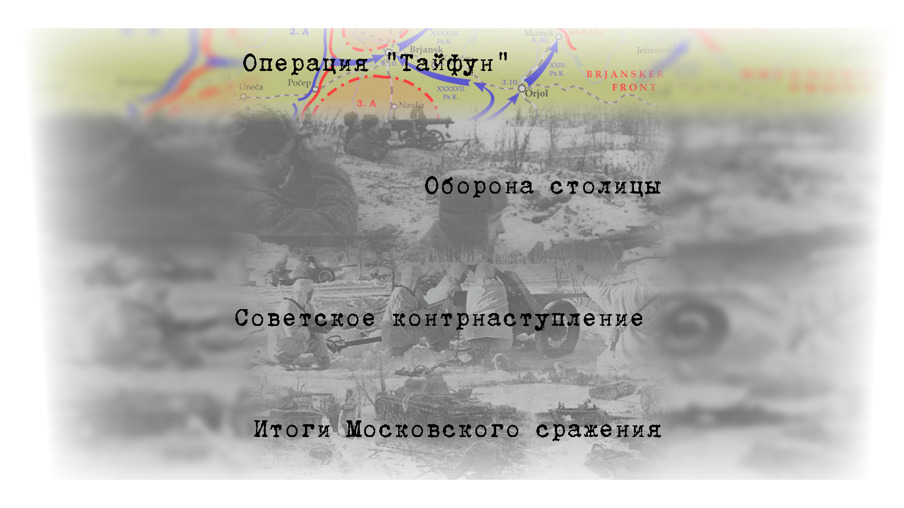

Только Смоленское сражение июля — сентября 1941 года задержало продвижение захватчиков к Москве на два месяца. Германские стратеги не смогли в полной мере предусмотреть всех издержек, связанных со значительным расширением фронта, износом материальной части ударных группировок и падением наступательного духа солдат и офицеров в случае непредвиденного упорного сопротивления противника.
К началу сентября 1941 года московское направление оставалось приоритетным для верховного немецкого командования. В телеграмме ОКХ от 31 июля 1941 года группе армий «Центр» было приказано по-прежнему «готовиться к наступлению на Москву».
6 сентября 1941 года до немецких частей была доведена директива ОКВ № 35: командование намечало в ближайшее время провести две крупные операции. Первая — по разгрому Юго-Западного фронта Красной армии силами группы армий «Центр» и «Юг», и вторая — решительное наступление войск на Москву, но после устранения угрозы южному флангу ГА «Центр». С момента выхода этой директивы началась непосредственная подготовка операции по захвату советской столицы.
В преамбуле Гитлер пояснил мотивы своего решения:
Начальные успехи против сил противника, находящихся между внутренними флангами групп армий «Центр» и «Север», с точки зрения окружения Ленинграда, создаёт предпосылки для проведения решающих операций против ведущей наступления группы армий Тимошенко. Она должна быть уничтожена ещё до наступления зимы. Для этого необходимо подтянуть и сосредоточить все силы авиации и сухопутной армии, без которых можно обойтись на флангах.— Приводится по тексту статьи: М. Ю. Мягков «Битва под Москвой», 2010

30 сентября 1941 года из района Шостки, направлением на Орёл — Тулу, перешла в наступление 2-я танковая группа вермахта, а 2 октября, — 9-я и 4-я полевые армии, 3-я и 4-я танковые группы атаковали позиции советских войск на московском направлении в нескольких участках фронта и стремительно развивали наступление на Малоярославец, Вязьму, Гжатск и Калугу. ОКХ приступило к осуществлению своего главного замысла 1941 года — Операции «Тайфун».
30 сентября, когда наступление немцев уже началось, А. И. Ерёменко, в то время командующий Брянским фронтом назначил на 3 октября проведение контрудара по флангам «вбитого в оборону фронта танкового клина» силами 13-й армии и группы генерала Ермакова. Перешедшие в наступление силы 2-й танковой группы были оценены командованием фронта как удар нескольких дивизий в направлении Севска.
К исходу 5 октября Брянскому фронту было предписано отвести войска на вторую полосу обороны на рубежи по реке Десна и удерживать Брянск. 6 октября 17-я танковая дивизия вышла к городу с тыла и захватила его. Карачев был утром того же дня захвачен 18-й танковой дивизией. А. И. Еременко был вынужден отдать приказ армиям пробиваться на восток «с перевёрнутым фронтом».
2 октября на Московском стратегическом направлении началось наступление главных сил группы армий «Центр». Создав подавляющее преимущество на узких участках, немецкие войска прорвали фронт советской обороны в районе Ельни и Спас-Деменска. К исходу 4 октября были захвачены Спас-Деменск и Киров, 5 октября — Юхнов. В этот же день противник вышел в район Вязьмы.
Для флангового контрудара по наступающей группировке была создана фронтовая группа И. В. Болдина. Однако в результате танкового боя в районе южнее Холм-Жирковского советские войска потерпели поражение. 7 октября немецкие 7-я танковая дивизия 3-й танковой группы и 10-я танковая дивизия 4-й танковой группы замкнули кольцо окружения войск Западного и Резервного фронтов в районе Вязьмы. В окружение попали 4 армии РККА.
9 октября передовой отряд моторизованной дивизии СС «Рейх», состоящий из 10-ти танков с мотопехотой (по немецким данным) захватили Гжатск. Таким образом было сформировано внешнее кольцо вокруг окруженных под Вязьмой советских армий. Были перерезаны Минское шоссе и железные дороги Вязьма-Сызрань и Москва-Смоленск.
До 11 октября окружённые войска предпринимали попытки прорваться, только 12 октября удалось на короткое время пробить брешь, которая вскоре была вновь закрыта. Всего под Вязьмой и Брянском в плен попало более 688 тыс. советских солдат и офицеров, из окружения удалось выйти лишь около 85 тыс. В вяземском «котле» были пленены командующий 19-й армией генерал-лейтенант М. Ф. Лукин и направленный к нему на помощь бывший командующий 32-й армией генерал-майор С. В. Вишневский, погиб командующий 24-й армией генерал-майор К. И. Ракутин.
Можайская линия обороны сооружалась в спешном порядке с 16 июля 1941 года на рубеже: Московское море — Волоколамск — Можайск — Малоярославец — Детчино. Общая проектная протяжённость линии составляла 220 км. Глубина обороны от 50 до 80 км, на 380 км2 при трёх полосах.
Были созданы три укреплённых района: 35-й — Волоколамский, 36-й — Можайский и 37-й — Малоярославецкий, а 26 августа Калужский, — 38-й район.
Планировалось к 10 — 25 октября 1941 года выполнить фортификационные и строительные работы первой очереди, а 15 — 25 ноября полностью завершить строительство Можайской линии обороны Москвы. Иногда к возведению укреплений привлекались дивизии народного ополчения, которые и должны были по плану оборонять эти рубежи, но «в связи со сложной обстановкой на фронте» их часто перебрасывали на передний край, где плохо обученные и слабо вооружённые, они быстро исчезали под мощными ударами противника.
Так например, 18 июля 1941 года к строительству оборонительных сооружений Ильинского сектора в зоне 37-го Малоярославецкого УРа, были привлечены бойцы недавно сформированной 17-ой дивизии народного ополчения под командованием полковника П. С. Козлова.
21 июля дивизия получила недостающее оружие, обмундирование, обувь. На следующий день ополченцы приступили к строительству оборонительных рубежей по линии Подососино, Ильинское, Лукьяново, Константиново, как раз на том рубеже, на котором с 10 по 17 октября будет держать героическую оборону сводный отряд Подольских курсантов. Бойцы Москворецкой дивизии начали привыкать к новому распорядку — ежедневно, отработав на оборонительном рубеже 6 часов, они 8 часов занимались боевой и политической подготовкой по ускоренной программе. Половина рот была занята на стройке, другая — на учении, после обеда менялись местами.— Климанов В. В. «Собой заслонили Москву».
Однако уже 31 июля весь личный состав дивизии с обмундированием и вооружением начали перебрасывать по железной дороге южнее Спас-Деменска для прикрытия Варшавского шоссе на участке Бураки — Подлесное в составе 33 армии. Советское командование старалось укрепить второй эшелон обороны. В конце июля — начале августа противник предпринял крупномасштабное наступление на рославльском направлении силами моторизованного и двух армейских корпусов, переброшенных из-под Орши и Смоленска. 3 августа немцы захватили Рославль и линия фронта ненадолго стабилизировалась на рубеже Екимовичи — Дубровка — Трубчевск — Шостка.
К началу октября 1941 года строительство линии завершено не было, оборудование было выполнено только на 40 %. Всего было построено 296 ДОТ, 535 ДЗОТ, 170 км. противотанковых рвов и 95 км. эскарпов. В большинстве ДОТы были без люков, бронированных щитов и дверей. Маскировки и вентиляции как правило не было, электричество было далеко не везде, приборов наблюдения не имелось.
По планам Верховного командования, Можайскую линию обороны, в случае необходимости, должны были занимать и оборонять подразделения 32, 33 и 34 армий, но начиная с середины июля 1941 года многие части находящиеся в резерве или разворачивающиеся на рубежах, начали перебрасывать в район Ельни, Спас-Деменска, Вязьмы и под Ленинград для «латания дыр в обороне» или создания там оперативных резервов.
8-10 октября дивизию срочно возвратили в район своей «плановой дислокации» под Малоярославец, но разгружаться теперь пришлось под непрерывными ударами авиации противника, теряя людей, технику и вооружение.
К концу сентября 1941 года сложилось положение, при котором вероятность быстрого захвата Москвы танковыми и моторизованными частями противника на Малоярославецком и Можайском направлениях была весьма высока. Немецкое командование прочно удерживало стратегическую инициативу в своих руках. Оперативная плотность группировки советских войск в целом была низкой, особенно по артиллерии, всего 12 орудий и минометов на 1 километр фронта, наблюдался дефицит боеприпасов для 76-мм и 152-мм пушек, 122-мм гаубиц, 82-мм и 120-мм минометов. Рассчитывать на эффективноcть огневого поражения противника в обороне не приходилось.
Немецкие ударные группировки заняли исходные районы за один-два дня до начала операции «Тайфун». 30 сентября из района Шостки перешла в наступление 2-я танковая группа генерала Гейнца Гудериана, а ранним утром 2 октября — 9-я и 4-я полевые армии.
3-я и 4-я танковые группы атаковали позиции Красной армии на юго-западном московском направлении и одновременно на нескольких участках фронта. Адольф Гитлер, уверенный в быстром и неминуемом захвате советской столицы, в приказе солдатам и офицерам восточного фронта от 2 октября 1941 года заявил:
За несколько недель три самых основных промышленных района будут полностью в наших руках… Создана наконец предпосылка к последнему огромному удару, который ещё до наступления зимы должен привести к уничтожению врага. Сегодня начинается последнее большое, решающее сражение этого года!— Приводится по тексту статьи в газете «Правда» от 22.01.1942 года.
Началась Московская стратегическая оборонительная операция, длившаяся 67 суток, с 30 сентября по 5 декабря 1941 года.
К исходу 2 октября части 3-й танковой группы генерала Гота прорвали фронт на стыке 19-й и 30-й советских армий, а 4-я танковая группа генерала Гёпнера — в полосе обороны 43-й армии южнее Варшавского шоссе.
Все усилия и внимание Советского Верховного командования в тот момент были сконцентрированы на орловском направлении и в районе Харькова — 2-я танковая группа за два дня углубилась в полосу обороны Брянского фронта на 120 километров.
Три стрелковые дивизии и две танковые бригады 43-й армии Резервного фронта не выдержали массированного удара двенадцати дивизий 4-й танковой группы. В тот же день передовые соединения Гёпнера наносили удар уже по второму эшелону фронта в 40 км от переднего края обороны, который занимали дивизии народного ополчения. Рассеяв войска Брянского и Резервного фронтов, танковые и моторизованные дивизии устремились на север по Варшавскому шоссе.
Передовые подразделения 2-й танковой группы Гудериана 3 октября захватили Орёл и развивали наступление на Мценск и Тулу.
10 октября приказом Военного совета фронта все укрепленные районы Можайской линии обороны были преобразованы в боевые участки.
12 октября, в связи с приближением линии фронта, Государственный комитет обороны принял решение о строительстве системы оборонительных сооружений на ближних подступах к столице. Приказом Ставки ВГК создаётся Московская зона обороны. В начале октября 1941 года Московская зона включала в себя систему укреплений вокруг столицы, состоявшей из трёх рубежей. Первый проходил через Клязьминское водохранилище, Хлебниково, реку Клязьму, Сходню, Нахабино, Перхушково, Красную Пахру и Домодедово. Второй и главный рубеж был отдалён от Москвы на 15-20 км. Третий рубеж находился в черте города и включал в себя линию обороны по Окружной железной дороге, Садовому и Бульварному кольцам, реке Москве на юге столицы.
12 октября пала Калуга, 14 октября — Боровск, 18 октября — Можайск и Малоярославец. Противником был перерезан ряд важнейших автомобильных и железнодорожных магистралей.
18 октября Люфтваффе нанесли массированный воздушный удар по Можайску и частям 5-й армии. После продолжительной артподготовки, большая группа мотопехоты и танков атаковала 32-ю стрелковую дивизию. Под мощным натиском врага красноармейцы были вынуждены оставить Можайск, Верею и уйти с укреплённых участков обороны. Отдельные очаги обороны на Можайской линии продержались до 29 октября.
Всего, за первые две — три недели боёв под Москвой Красная Армия лишилась до 1 млн человек, из которых около 688 тыс. человек пленными.
Мужественное, но не всегда умелое сопротивление воинов Красной Армии не смогло остановить германские танковые объединения. Многие дивизии Резервного и Западного фронтов комплектовались из ополченцев, которые дрались героически, но не имели необходимого опыта и выучки. Немцы же максимально использовали своё преимущество в огневой мощи и подвижности. Полевые командиры вермахта получали радиоперехваты переговоров между советскими штабами и применяли радиообман.
15 октября Государственный Комитет обороны СССР принял решение об эвакуации Москвы. На следующий день началась эвакуация из Москвы (в Горький, Куйбышев, Саратов, Молотов и другие города) управлений Генштаба, военных академий, наркоматов и других учреждений, а также иностранных посольств. Осуществлялось минирование заводов, электростанций, мостов.
16 октября город охватила паника. Главным фактором для проявления панических настроений стал прорыв Можайской линии обороны и возможное появление передовых германских отрядов в Москве. Историк А. Б. Воронин считает, что термин «московская паника» является не совсем корректным: это была не столько паника, сколько потерянность в жёстких условиях войны, когда большое число москвичей оказались предоставлены сами себе, а предыдущий уклад жизни спешно исчез. Момент безвластия продолжался всего 1-2 дня, однако подобный эксцесс был настолько необычен для Москвы, что это запомнилось как «московская паника» или «московский позор».
20 октября Государственный Комитет обороны СССР ввёл в Москве и пригородах осадное положение. Оборона подступов к столице поручалась командующему Западным фронтом генералу армии Жукову, а оборона Москвы на её подступах — начальнику гарнизона Москвы генерал-лейтенанту Артемьеву.
21 октября Артемьев приказал приступить к постройке огневых точек и баррикад на улицах и площадях города и в его окрестностях. Предусматривалось создание трёх оборонительных рубежей:
Имевший в начале декабря беседу со Сталиным генерал Владислав Сикорский в беседе с британским послом в СССР Стаффордом Криппсом констатировал: «Нет никакого сомнения в том, что русские будут продолжать борьбу вне зависимости от судьбы Москвы».
В 1975 году В. М. Молотов на вопрос, были ли у Сталина колебания в октябре 1941 года — уехать из Москвы или остаться? отвечал: «Это чушь, никаких колебаний не было». Попытки эвакуировать Верховного главнокомандующего в Куйбышев были, но на косвенный вопрос: «Товарищ Сталин, когда отправить из Москвы полк охраны?» тот ответил: «Если будет нужно, я этот полк сам поведу в атаку».
Тем временем, немецкая 3-я танковая группа повернула на Калинин и 14 октября взяла город. Основной задачей такого поворота было создание нового «котла» силами 9-й армии и 3-й танковой группы на северном фланге группы армий «Центр».
Для прикрытия столицы с северо-запада 17 октября на базе войск правого крыла Западного фронта был создан Калининский фронт.
Войска фронта при поддержке авиации ежедневно атаковали немцев в районе Калинина. В результате этих действий 23 октября последовала директива фон Бока о приостановке наступления через Калинин. Таким образом, энергичные удары в районе Калинина хотя и не привели к овладению городом, но сорвали выполнение основной задачи, ради которой 3-я танковая группа разворачивалась от Москвы на север.
Оборона Тулы была возложена на 50-ю армию. Под давлением превосходящих сил противника её малочисленные войска вынуждены были отойти в северо-восточном направлении, к Туле. Соединения 3-й армии отходили на восток, к Ефремову.
После тяжёлых боёв в районе Мценска немецкие войска 23-24 октября продолжили наступление на Тулу. Однако выход из окружения остатков многих соединений Брянского фронта позволил Ставке восстановить фронт с затратой меньших сил из резерва и других участков фронта.
29 октября немецкие войска вышли к Туле. В течение трёх дней немецкие войска предпринимали яростные атаки с целью овладеть городом. Несмотря на то, что к Туле успела отойти только часть войск 50-й армии, они совместно с местным гарнизоном и ополченцами отстояли город. С помощью населения вокруг города были созданы три оборонительных рубежа. В итоге атаки немецкого 24-го моторизированного корпуса на Тулу 1 и 2 ноября были успешно отбиты. Предпринятые противником в первой половине ноября новые попытки захватить Тулу фронтальным ударом с юга, а также обойти её с севера были отражены советскими войсками при активном участии всего населения города.
По окончании распутицы наступление немецких войск с целью окружения Москвы возобновилось. 3-я и 4-я танковые группы Вермахта должны были, наступая на Клин и Солнечногорск, обойти город с севера, а 2-я танковая группа, наступая в обход удерживаемой частями РККА Тулы на Каширу и Коломну — с юга. Кольцо окружения планировалось сомкнуть в районе Ногинска. 4-й полевой армии Вермахта ставилась задача «сковать войска Западного фронта» в центре. Наступление на северном направлении было предпринято немцами 15—16 ноября, на южном — 18 ноября.
После тяжелых боев немецкая 3-я танковая армия 23 ноября захватила Клин и 24 ноября — Солнечногорск. В своих мемуарах Г. К. Жуков написал, что Сталин в те дни задал ему вопрос о возможности удержать Москву и потребовал от него «отвечать честно, как коммунист». Жуков ответил, что удержать Москву возможно, но для этого срочно нужны резервы. К 27 ноября немецкая 7-я танковая дивизия смогла форсировать канал Москва-Волга и закрепиться на другом берегу. Расстояние от немецких позиций до Кремля составляло менее 35 км.
Однако мощная контратака 1-й ударной армии РККА сбила немцев с занимаемых позиций. На северо-западе от Москвы войска Вермахта заняли Красную Поляну и вышли на расстояние чуть более 29 км от Кремля. В свои полевые бинокли немецкие офицеры могли разглядеть самые большие здания советской столицы, но силы немцев — как, впрочем, и РККА — были истощены: в некоторых полках противников насчитывалось всего по 150—200 боеспособных солдат, то есть по одной-две роты полного состава. Дальнейшему продвижению немцев на северном направлении помешал сброс вод из Истринского, Иваньковского водохранилищ и других водохранилищ канала имени Москвы, которые были взорваны 24 ноября.
По воспоминаниям маршала Шапошникова: «с приближением немцев к этому рубежу водоспуски водохранилища были взорваны, в результате чего образовался водяной поток высотой до 2,5 м на протяжении до 50 км к югу от водохранилища. Попытки немцев закрыть водоспуски успехом не увенчались». Ряд населённых пунктов подверглись затоплению вместе с их жителями, которые не были эвакуированы и не были предупреждены о затоплении, ввиду сохранения особой секретности при подготовке и проведении данной акции.
Южнее Москвы 2-я танковая армия Вермахта предприняла попытку окружения Тулы с первоначальным темпом наступления в 5-10 км в сутки. Невысокий темп обуславливался фланговыми атаками расположенных рядом с Тулой советских 49-й и 50-й армий, усталостью немецких войск и отсутствием у них зимнего обмундирования. Тем не менее, Гудериан смог 22 ноября взять Сталиногорск и 26 ноября подойти к Кашире, через который проходило московское шоссе, но контрудар советских войск отбросил противника на исходные позиции. На южном направлении немцам не удалось заметно приблизиться к столице СССР.
Вследствие сильного сопротивления как на северном, так и на южном направлениях обхода Москвы 1 декабря командование группы армий «Центр» предприняло попытку прямого наступления на Москву с западного направления вдоль шоссе Москва-Минск возле Наро-Фоминска (в районе Апрелевки). Это наступление поддерживалось небольшим количеством танков, хотя и было направлено против хорошо подготовленных оборонительных позиций. Встретив упорное сопротивление 1-ой гвардейской мотострелковой дивизии по фронту и контрудары 33-й армии с фланга, немецкое наступление застопорилось, и через 4 дня Вермахт был отброшен от Москвы на этом направлении контрударами 1-й Ударной и 20-й армий.
В этом наступлении непосредственно на город принимал участие 638 пехотный полк, единственное иностранное формирование Вермахта, задействованное в наступлении на Москву. Второго декабря разведывательный батальон Вермахта вышел в г. Химки (рубеж моста через канал Москва-Волга и городской железнодорожной станции) — на расстояние около 30 км от московского Кремля. Благодаря чётко организованному взаимодействию 33-й армии генерала М. Г. Ефремова и 5-й армии генерала Л. А. Говорова попытка дальнейшего продвижения была ликвидирована. Ставка ВГК приказала, кроме переданных Западному фронту из резерва Ставки 1-й Ударной, новых 10-й и 20-й армий, включить в состав Московской зоны обороны 24-ю и 60-ю армии.
2 декабря передовые части 1-й Ударной и 20-й армий отразили все атаки противника севернее Москвы в районе Дмитрова и южнее и вынудили его прекратить наступление.3-5 декабря 1-я Ударная и 20-я армии нанесли несколько сильных контрударов в районе Яхромы и Красной Поляны и начали теснить врага. Левофланговые дивизии 16-й армии во взаимодействии с 5-й армией отбросили противника из большой излучины р. Москвы северо-восточнее Звенигорода. Ударная группа 33-й армии, разгромив 4-5 декабря вражеские части, восстановила положение на реке Нара.
В оборонительном этапе Московской битвы советские войска понесли огромные потери: 514 338 человек — безвозвратные потери и 143 941 человек — санитарные и это без учёта потерь народного ополчения, истребительных батальонов, формирований НКВД и партизан.
В ходе наступления на Москву, с октября до начала декабря 1941 года, войска группы армий «Центр» потеряли более 145 тыс. чел. Её ежемесячные потери за это время не сильно превысили средний показатель предыдущего периода. «Сражение на уничтожение» под Брянском и Вязьмой обошлось войскам фон Бока в 25 тыс. чел. Самые большие потери понесли здесь пехотные соединения.
В ходе оборонительного этапа Московской битвы советское командование навязало противнику «войну на истощение» (когда в бой бросается «последний батальон», который должен решить исход сражения). Но если в ходе битвы все резервы немецкого командования были исчерпаны, советское командование сумело сохранить основные силы (из стратегических резервов в бой были введены только 1-я Ударная армия и 20-я армия).
Командующий немецкой 2-й танковой армией Г. Гудериан так записал своё резюме:
Наступление на Москву провалилось. Все жертвы и усилия наших доблестных войск оказались напрасными. Мы потерпели серьёзное поражение, которое из-за упрямства верховного командования повело в ближайшие недели к роковым последствиям. В немецком наступлении наступил кризис, силы и моральный дух немецкой армии были надломлены. Ощутив перелом в ходе сражения, советское командование отдало приказ о контрнаступлении.
В оборонительный период битвы Красная армия отстояла Москву. Наступление противника, несмотря на успехи лета — осени 1941 года, было остановлено. Враг не сумел достичь своей главной цели блицкрига — уничтожить советские вооруженные силы до наступления зимы. Германия оказалась перед неизбежностью затяжной войны с СССР.
Это был поворотный пункт нашей восточной кампании — надежды вывести Россию из войны в 1941 г. провалились в самую последнюю минуту. Теперь политическим руководителям Германии важно было понять, что дни блицкрига канули в прошлое. Нам противостояла армия, по своим боевым качествам намного превосходящая все другие армии, с которыми нам когда-либо приходилось встречаться на поле боя.— Бывший начальник штаба 2-й армии генерал Г. Блюментрит.
С конца октября по начало декабря 1941 года удалось укрепить фронт и подтянуть из глубины страны свежие дивизии и вооружение с техникой. В состав только Западного фронта были переданы три общевойсковые армии (1-я ударная, 20-я и 10-я), девять стрелковых и две кавалерийские дивизии, восемь стрелковых, шесть танковых бригад и большое количество специальных частей.
Калининский фронт и правое крыло Юго-Западного фронта также были заметно пополнены людьми и вооружением. Авиационные соединения этих фронтов были пополнены частями Московского военного округа, 6-го истребительного корпуса ПВО и дальней бомбардировочной авиации из резерва Главного Командования.
К началу декабрьского контрнаступления насчитывалось уже более 1,1 млн человек, 7652 орудий и миномётов, 415 установок реактивной артиллерии, 774 танка (в том числе 222 тяжёлых и средних) и 1 тыс. самолётов. В немецкой группе армий «Центр» было 1 708 тыс. человек, около 13 500 орудий и миномётов, 1170 танков и 615 самолётов.
С целью предотвращения дальнейшего усиления группы армий «Центр» за счёт войск групп армий «Север» и «Юг», советскими войсками были проведены наступательные операции: Тихвинская (с 10 ноября) и Ростовская (с 17 ноября).
5 декабря войска Калининского, 6 декабря — Западного и Юго-Западного фронтов перешли в контрнаступление. Через три дня после начала наступления Красной армии под Москвой, Гитлер был вынужден подписать директиву № 39 о переходе немецких войск к обороне на всём советско-германском фронте.
5 декабря отмечается как День воинской славы России — День начала контрнаступления советских войск против немецко-фашистских войск в битве под Москвой в 1941 году.
В ходе сражения немецкие войска потерпели ощутимое поражение. В результате контрнаступления и общего наступления они были отброшены на 100—250 км. Полностью были освобождены Тульская, Рязанская и Московская области, многие районы Калининской, Смоленской и Орловской областей.
Красная Армия в битве под Москвой впервые за шесть месяцев войны нанесла крупнейшее поражение главной группировке гитлеровских войск. Это была наша первая стратегическая победа над вермахтом. До этого Советские Вооруженные Силы уже осуществили ряд серьёзных операций, замедливших продвижение вермахта на всех трёх главных направлениях его ударов. Тем не менее они по своим масштабам и результатам уступают великой битве у стен советской столицы.— Г. К. Жуков. «Воспоминания и размышления» М. 1971.
В то же время силы вермахта смогли сохранить фронт и Ржевско-Вяземский плацдарм. Советским войскам не удалось разгромить группу армий «Центр». Таким образом, решение вопроса об обладании стратегической инициативой было отложено до летней кампании 1942 года.
Вопреки распространённой сегодня точке зрения, многие немецкие генералы высоко оценивали боевые качества красноармейцев. Через месяц боёв Гальдер записывает окончательный и крайне неприятный для германского командования вывод, сделанный фельдмаршалом Браухичем: «Своеобразие страны и своеобразие характера русских придаёт кампании особую специфику. Первый серьёзный противник»[120].
К тому же выводу приходит и командование группы армий «Юг»: «Силы, которые нам противостоят, являются по большей части решительной массой, которая в упорстве ведения войны представляет собой нечто совершенно новое по сравнению с нашими бывшими противниками. Мы вынуждены признать, что Красная Армия является очень серьёзным противником… Русская пехота проявила неслыханное упорство прежде всего в обороне стационарных укреплённых сооружений. Даже в случае падения всех соседних сооружений некоторые ДОТы, призываемые сдаться, держались до последнего человека».
Министр пропаганды Геббельс, перед началом вторжения считавший, что «большевизм рухнет как карточный домик», уже 2 июля записывает в дневнике:
В общем, происходят очень тяжелые бои. О «прогулке» не может быть и речи. Красный режим мобилизовал народ. К этому прибавляется ещё и баснословное упрямство русских. Наши солдаты еле справляются. Но до сих пор все идет по плану. Положение не критическое, но серьёзное и требует всех усилий.— Приводится по тексту издания: Е. М. Ржевская «Геббельс. Портрет на фоне дневника», 1994.
Генерал Гюнтер Блюментрит:
Теперь политическим руководителям Германии важно было понять, что дни блицкрига канули в прошлое. Нам противостояла армия, по своим боевым качествам намного превосходившая все другие армии, с которыми нам когда-либо приходилось встречаться на поле боя. Но следует сказать, что и немецкая армия продемонстрировала высокую моральную стойкость в преодолении всех бедствий и опасностей, обрушившихся на неё.— Приводится по тексту издания: Д. З. Муриев «Провал операции „Тайфун“», 1972.
Президиум ВС СССР Указом от 1.05.1944 учредил медаль «За оборону Москвы»: по состоянию на 1 января 1995 года медалью «За оборону Москвы» награждено приблизительно 1 028 600 человек.